Here are my rankings of the concerts and the venues. I touch on both the experience and overall vibe.
Concerts
1. Tyler the Creator
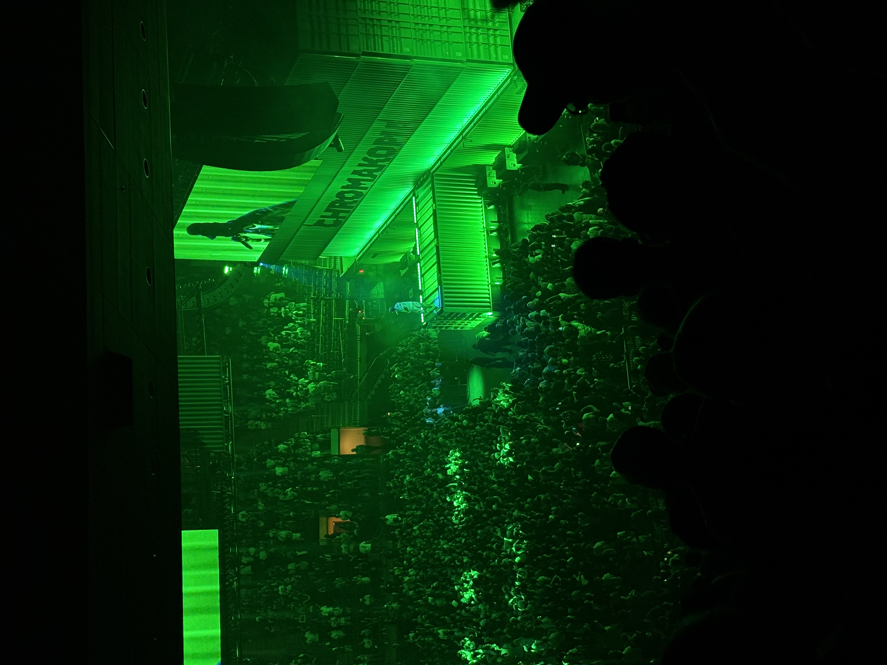
Tyler the Creator being one of my favorite artists naturally would be my favorite concert experience. Not only was this at my favorite venue, Madison Square Garden, it was also an amazing experience. He constantly interacts with his crowd and the music is so hype and lively that I had a great time. Additionally, all the people around me in my section we're having a great time as well which fuels the energy. I went to this concert with my two sisters and it was a great bonding experience and memory we all will share forever.
2. Harry Styles
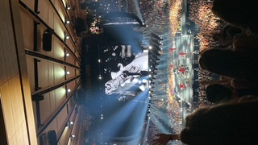
I attended the Harry Styles concert at Madison Square Garden in 2022 with my older sister and cousin. Harry Styles was one of my favorite artists back then and I was so excited to finally see him in person. Despite not knowing all of the songs to his newer album, titled Harry's House, it was still a wonderful experience. He played both old and new songs and I was so glad that I got the chance to see him live, especially now that I couldn't get tickets for his most recent concert. Once again everyone was singing along and he interacted with this crowd greatly. He dances around the stage and brings up the energy up until the very last moment.
3. Steve Lacy
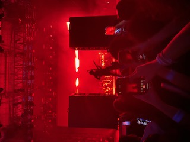
Steve Lacy was my first experience being in the pit of a concert. This concert was a part of a larger event that featured multiple artists that opened for him. I went to this show with my older sister and two of my high school friends and we had the best time together. We showed up multiple hours early to get close to the barricade and it was the best decision we could have made. Despite the many tall people surrounding us and having to stand on my tippy toes majority of the time, it was such a lively experience. I didn't know the artists who opened for him prior, however after seeing them live I began to listen to their music and have grown a liking to them as well. Standing at the Forest Hills Stadium for almost 12 hours is an experience I'll never forget. In the end it was all worth it to see Steve Lacy perform that up close.
4. SZA
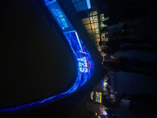
Seeing SZA perform live at Barclay Center was one of my first concerts alone without a family member and just one of my friends. I went with one of my close friends who also loved her music and we still talk about this concert to this day. Even though our seats were very deep into the nosebleeds we had an amazing time together. SZA is a great performer and her music is out of this world. I still look back on the videos from this concert in my free time.
5. Don Toliver
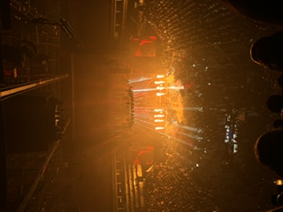
I saw Don Toliver in Barclays Center with my younger sister and it was a great bonding experience for the two of us. I had dragged her to this concert even though she didn't know a lot of the songs but she had an amazing time. We became great friends with the people around us in our section and we're dancing with them for the majority of the concert. Don Toliver's songs are so lively and upbeat that it makes for a very enjoyable time whether you know the lyrics or not. If I could go back and relive this concert I would and I highly suggest attending one of his events.
6. GOV BALL - Wallows, Conan Gray, Young Miko, Olivia Rodrigo
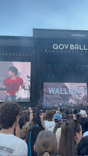
Deciding to go to the Governor's Ball was one of the highlights of my senior year of high school. Multiple of my friends and I decided to go at the very last minute and none of us regret it at all. With this experience you got to see multiple artists in one day running around from one stage to the next. My top performer from this day was the band Wallows since I have been a fan of them since 2019. They played all of my favorite songs in the crowd and it was amazing. An artist from this day that I surprisingly loved as well was Olivia Rodrigo. She had the biggest crowd which was a slight con since we were very far back and couldn't see anything but the screens displaying her. Her music was still amazing and everyone was so excited to watch her perform, as she also interacts with her audience a lot. I highly recommend going to a music concert at least once since you can see many people in one day.
7. Clairo
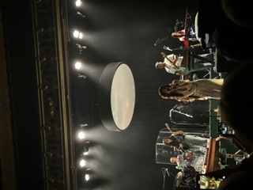
I attended the Clairo concert with the same friend who I saw SZA with. We unknowingly purchased VIP tickets but we're not angry at all at what we received. This concert was located at Webster Hall in Manhattan and we got to enter early and received merch as well. Since we got there so early we were very close to the stage and saw her up close. Unlike my other experiences in the pit of a concert this was very calm. Her music has a different vibe compared to other artists so the entire crowd was very peaceful and it felt like a community. I too have loved Clairo since 2019 so this was definitely a check off the bucket list.
8. Tame Impala
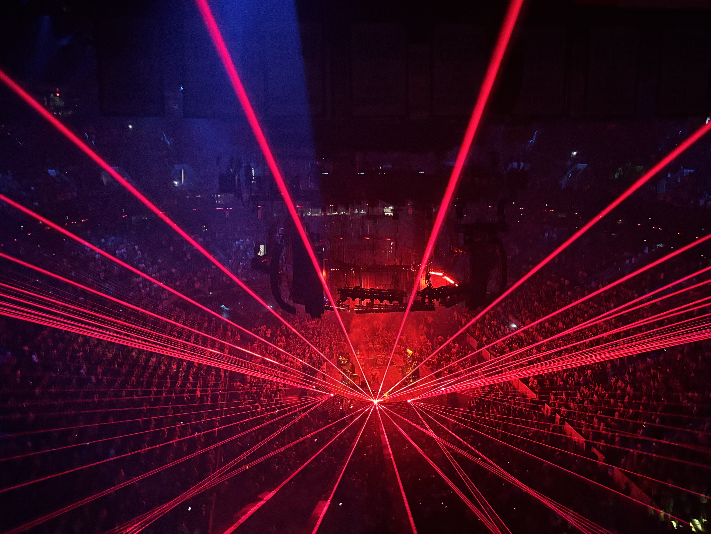
Tame Impala was one of the three concerts I saw this summer with my two sisters. This was my first and only time attending a concert in Boston in the TD Garden. We arrived early to watch the opener and I'm so glad that we did. The concert itself was a great experience, additionally, one of the staples of his concerts are the light shows that accompany his music. This recent album was more of an EDM genre so it was very lively. The only con of this concert was the rowdiness of some of the people in our section. Not many people were tuned into the music and didn't have personal space awareness. Either way I would attend one of his concerts again.
9. Childish Gambino
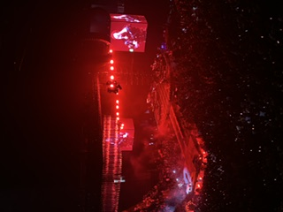
I attended the Childish Gambino concert with my older sister right before he canceled the rest of his tour. I felt so lucky to have been able to go before he announced his break from music. Similar to Tame Impala, the vibe of this album was also EDM adjacent and he also accompanied his music with a light show throughout. I enjoyed the vibe of this concert a lot as well as the energy and people around me. If he ever has another concert again I would definitely attend.
10. Travis Scott
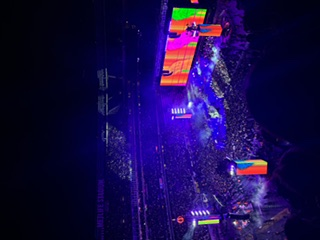
My friend and I traveled to New Jersey to MetLife Stadium to see Travis Scott live. We took multiple forms of public transportation and it was a great experience throughout. Despite not knowing all the lyrics to the songs we had an amazing time. Everyone there was very hype and excited to be there. I will never forget nearing the end of his show where he set off fireworks along with his songs which was an amazing ending. Another key point of this concert was him playing the very popular song “FEIN” 11 times. Whether or not you know all of his lyrics, it was still a very fun time.
11. Daniel Caesar
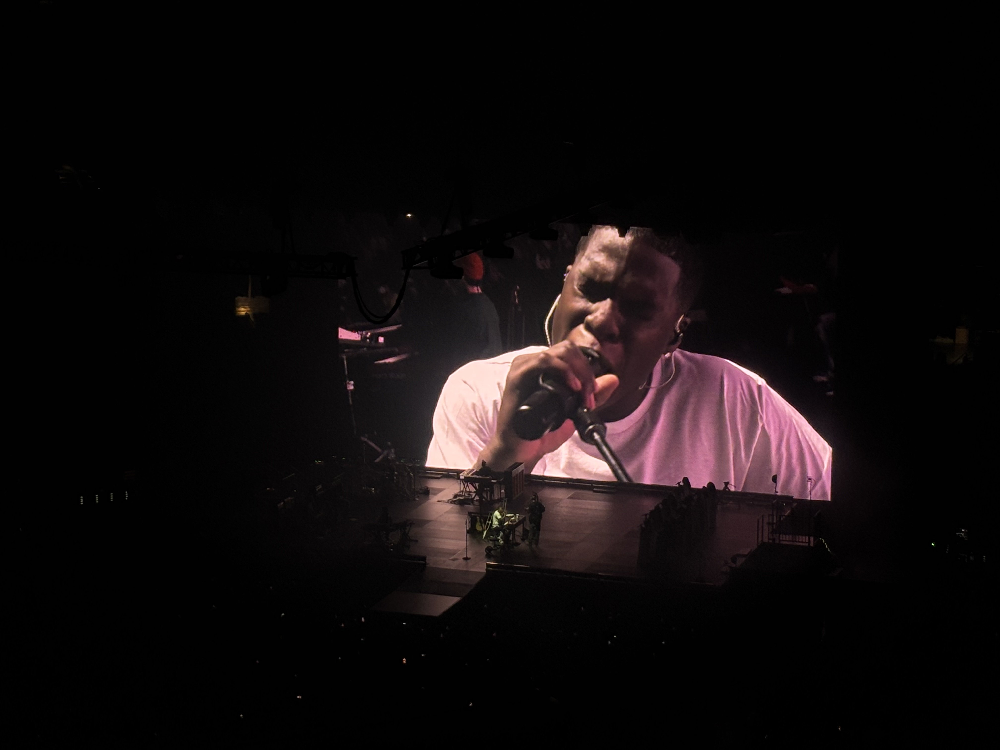
Seeing Daniel Caesar this summer with my two sisters was also a very great experience. I have nothing negative to say about going to this concert, it just was not my favorite. His music is very calm and the crowd had great energy as well but it wasn't that amazing that I would rank it higher. The only annoyance I had was that everybody was sitting down the entirety of the concert. No one was up and dancing around so it felt like a much calmer event.
12. DJO
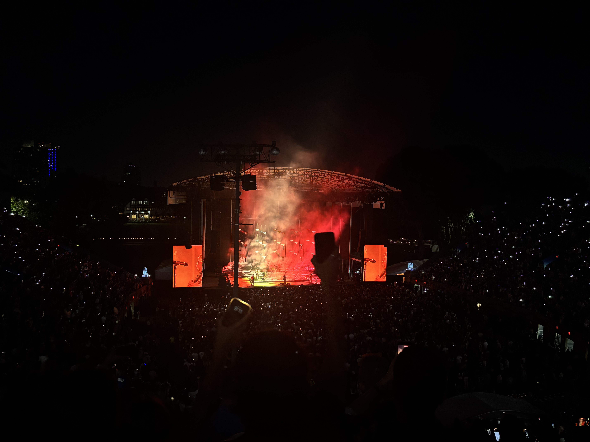
For my last and final concert this summer, which I again saw with my two sisters, we saw DJO in the Forest Hill Stadium. This stadium is not my favorite because it is an outside open arena. Unlike when I saw Steve Lacy there, I had an assigned seat and was higher up in the stands. Since this concert goes until later at night and it was the summer, it got cooler once the sun set and bugs were annoying me a lot of the time. Additionally the walk out of this concert to the train especially at night is very confusing and slightly annoying. The concert itself was great and I know a majority of his songs. The crowd was very calm other than a few people around me with bad concert etiquette.
13. Malcolm Todd
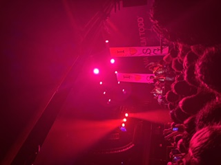
Seeing Malcolm was a very interesting experience as my older sister and I saw him at Terminal 5 venue. We had showed up later than intended before the concert and the line was extremely long to get in, which was our fault. However once inside and the concert began there was a lot of pushing and shoving and very tall people everywhere. It was very hard to see and also loud and crowded. I think I would have liked this experience better if the crowd managed themselves better. Malcolm Todd is one of my favorite artists so this experience saddened me.
14. Selena Gomez
The only reason that seeing Selena Gomez is the last place for me is because I was extremely young when I saw her, as this was my first concert. This was my first time at Barclays Center but I don't entirely remember the experience since I was so young. I remember the boy band, Emblem 3, had opened for her and they were very entertaining at the time. I know at the moment I enjoyed the experience, however I just cannot talk or rate it effectively in the present day.
Venues
1. Madison Square Garden
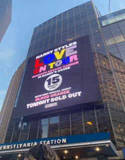
The best venue in my opinion. No matter what seat you have a good view, also the stage is very large. It's not hard to get to at all, and there is so much public transportation around it.
2. Barclay Center
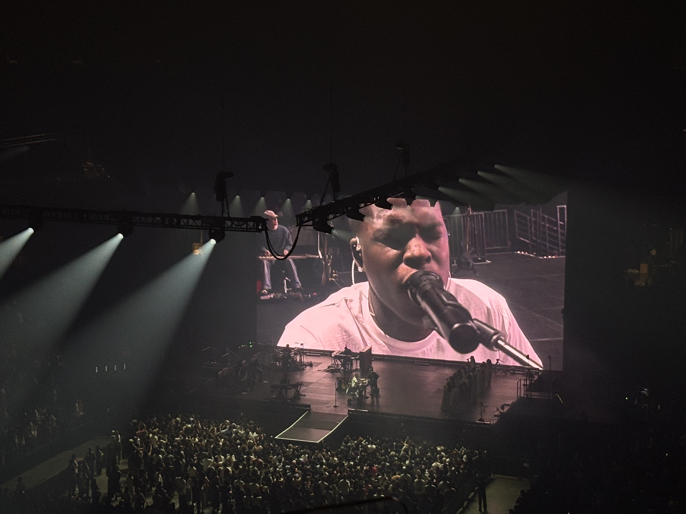
Not my favorite place, solely because of the incline of the steps. As you go up a section the stairs are so steep and on an incline you feel like you will fall at any moment. Still a great view majority of the time.
3. Flushing Meadows Corona Park
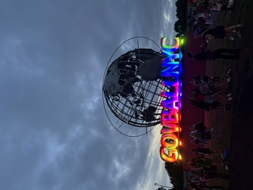
A great venue for the Governor's Ball events. Many different stages, many different food vendors, and many bathroom sections. The only con of this venue is the lack of Wi-Fi. I lost track of my friends many times.
4. TD Garden/Met Life Stadium
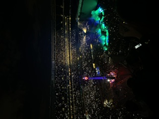
There's nothing bad to say about either of these venues. TD Garden is fully enclosed and Met Life Stadium is open on the top, however I rank them both the same. There wasn't a negative experience either.
5. Forest Hills Stadium
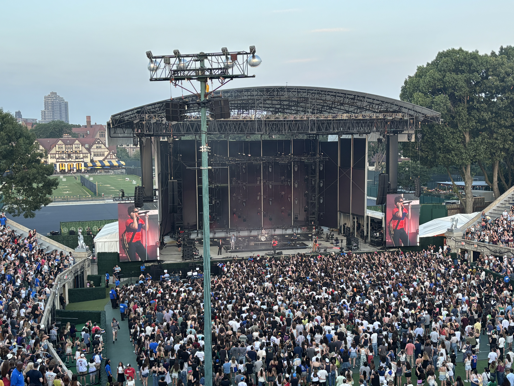
Not my favorite venue just because it's completely outside. There aren't any obstructed views however when you're sitting you feel very far away, no matter how close your seat is. I had a great time in the standing section though.
6. Webster Hall
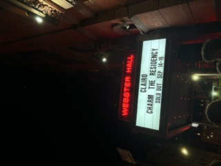
My favorite of the two standing only arenas. This venue was nice and spacious and didn't feel that cramped. There was also a small bar on the inside where you could get beverages.
7. Terminal 5
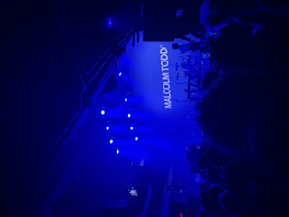
Only a standing venue which is slightly annoying. Not much different from other standing venues, however there were many tall pillars everywhere obstructing the view.